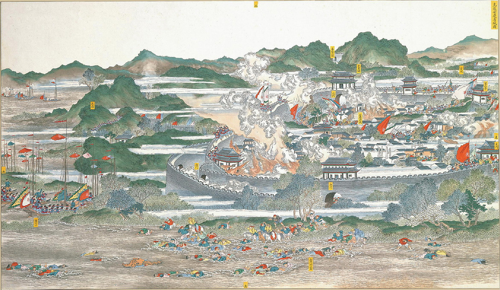
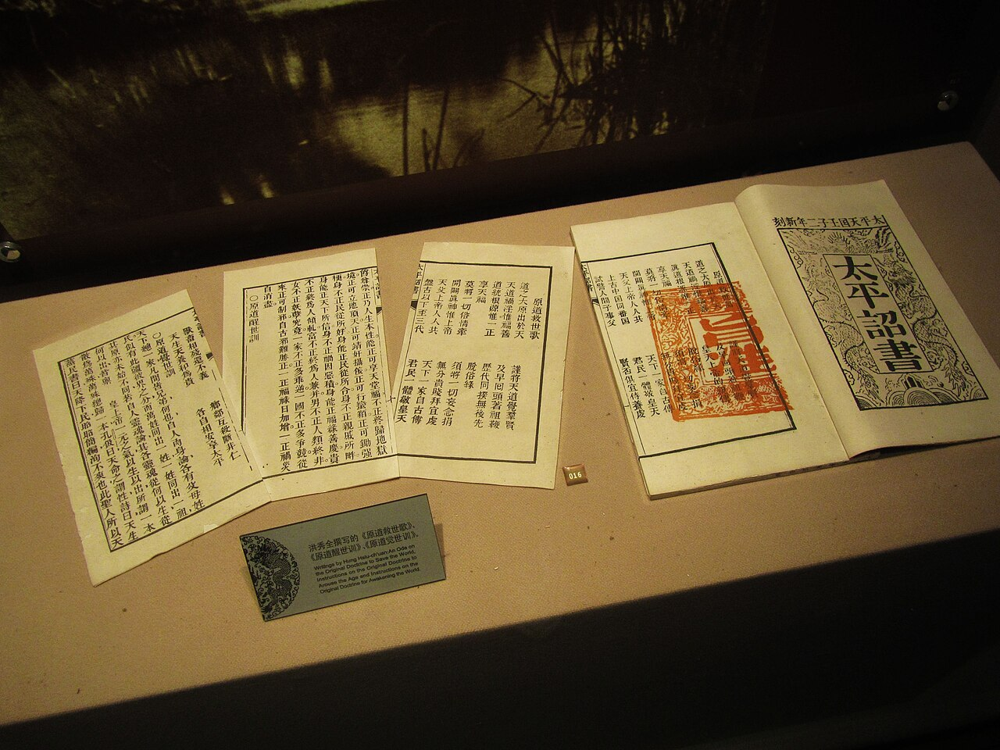
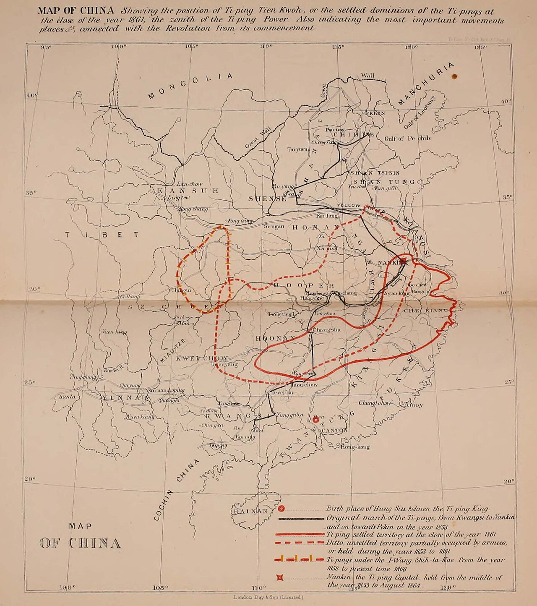
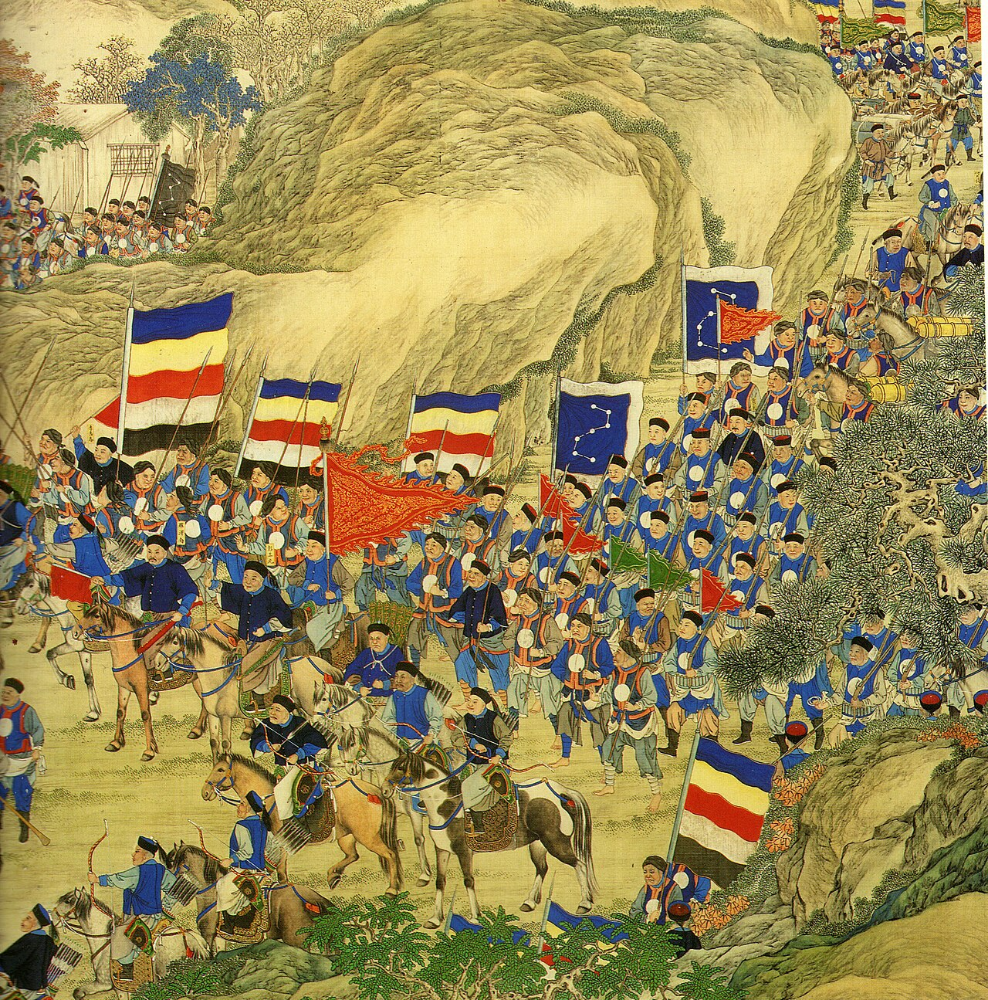
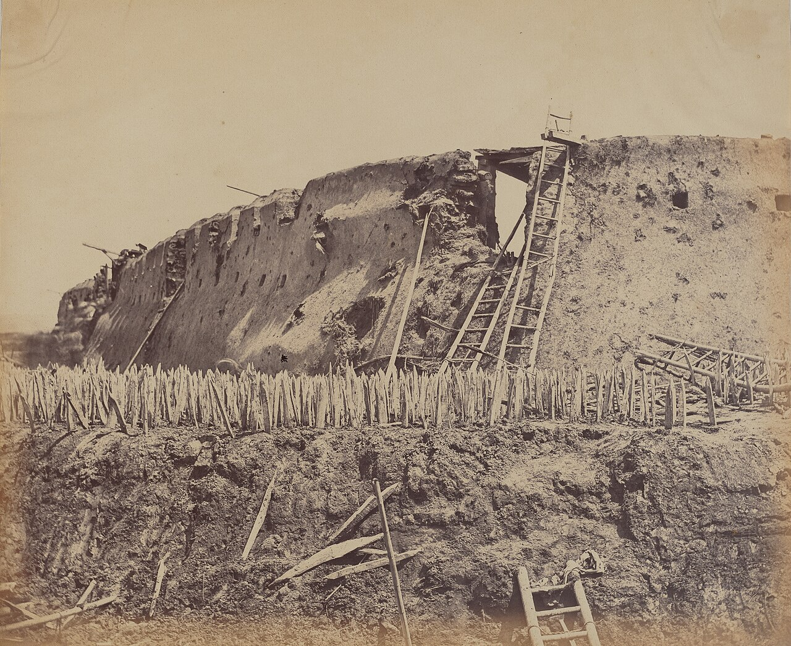
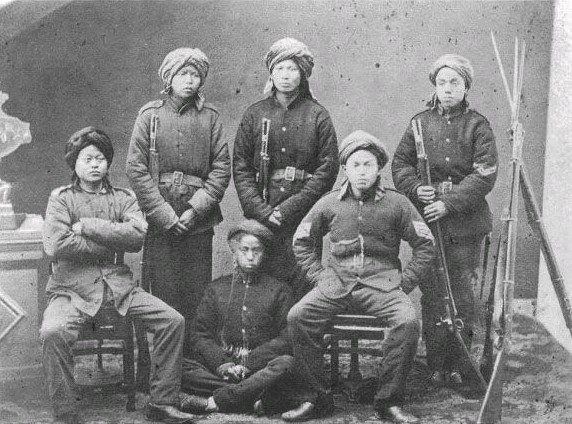
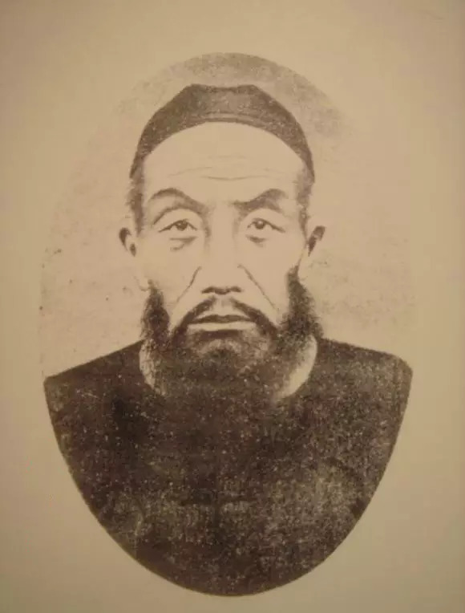
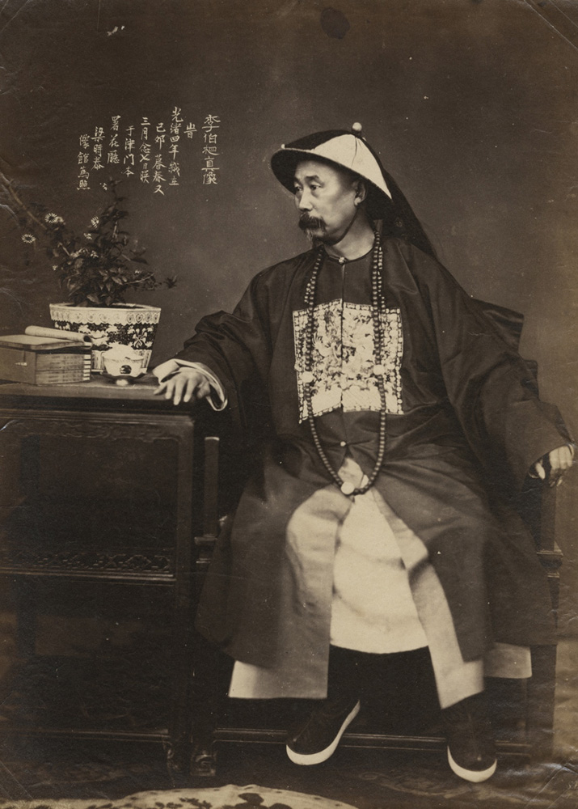
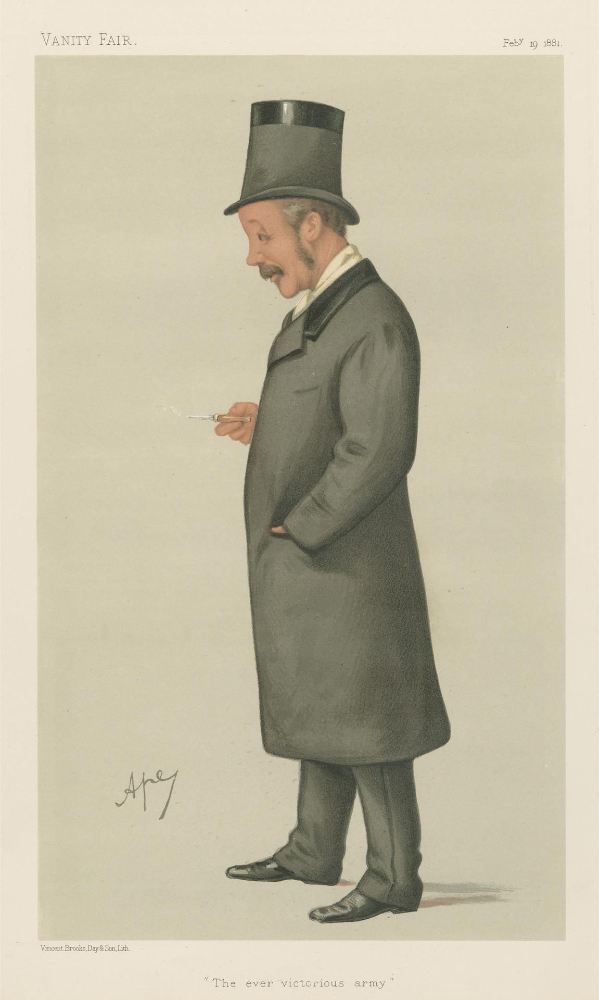
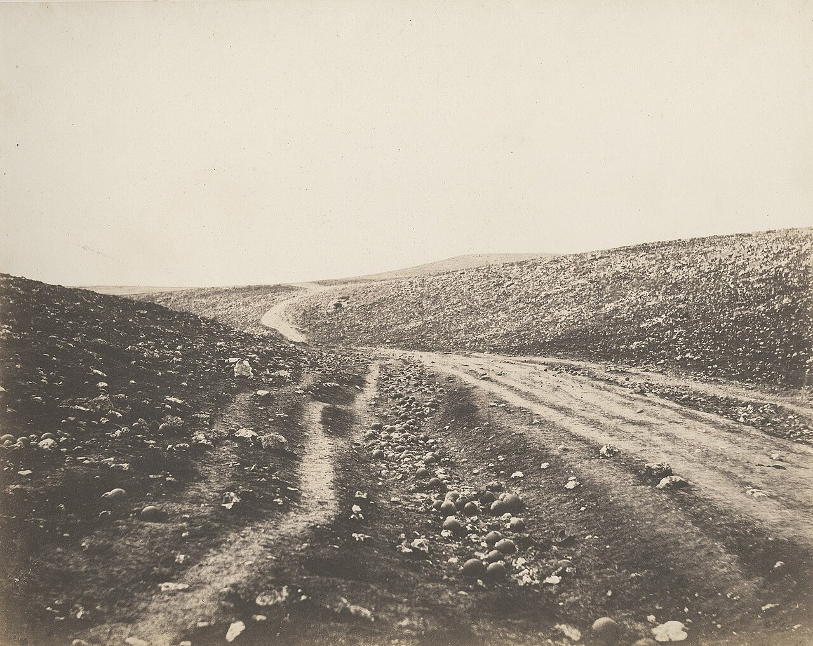

Friday · History
The (1850–1864)
A man who failed the four times decided he was the younger brother of . His followers built the , held Nanjing for eleven years, and fought the in a civil war that most estimates say killed 20 to 30 million people. It was put down by provincial armies raised by Confucian scholars, with help from Western-officered troops near Shanghai, and it changed how China was ruled for the rest of the dynasty.


The name of this event is itself an argument. officials called it a time of chaos or a bandit rising; Chinese historians since the twentieth century usually call it the Movement; historians such as and have argued that 'rebellion' quietly takes the side and prefer 'civil war'. This capsule uses 'Taiping Rebellion' because it is the most common English name, not to settle that argument. The death toll is an estimate. There was no reliable census, and the most widely cited range, 20 to 30 million dead, includes deaths from famine and epidemic disease as well as from fighting and massacres; much higher figures exist but are speculative. The sources are uneven: the destroyed most Taiping records, and roughly a tenth of Taiping publications are thought to survive, so much of what we know comes from the winners, from foreign visitors, and from confessions written by captured Taiping leaders before their execution. 's own birth date is given in at least nine versions; this capsule uses 1 January 1814, the date most scholars accept. Dates are given in the Western calendar. Both sides massacred civilians. The Taiping killed populations in the cities they took, and forces killed rebels and civilians on a vast scale during the reconquest. This capsule names both and does not rank them.
Select any words, or tap a dotted term.
- 1766–1833 Population pressure China's population nearly doubled while the amount of cultivated land stayed about the same. Rents and taxes rose, banditry spread, and secret societies and local militias multiplied, especially in the south.
- 1839–1842 First Opium War Britain defeated the and forced open treaty ports. The defeat damaged the dynasty's prestige and the opium trade drained silver from the economy.
- 1832 Good Words to Admonish the Age printed , a Chinese Protestant preacher ordained by the missionary , published a long Christian work of more than 500 pages in Guangzhou. received a copy in 1836 while sitting the .
- 1837 Hong's visions After failing the for the third time, fell ill and dreamed of visiting Heaven, where a celestial father and elder brother told him to fight demons.
- 1843 Hong reads the pamphlets After his fourth and final examination failure, read 's tracts and concluded that his celestial father was God and his elder brother was . He began destroying idols and preaching.
- 1844–1847 God Worshipping Society 's follower built a community of converts, many of them poor , in the region of Guangxi. In 1847 spent two months studying with the American Baptist in Guangzhou, who refused to baptise him.
- January 1851 Jintian uprising A rebel army of about 10,000 routed troops at in Guangxi. On 11 January 1851 proclaimed himself of the , the .
- 19 March 1853 Nanjing taken After a march north through Hunan and down the Yangtze, the Taiping captured Nanjing, renamed it (Heavenly Capital), and killed its population. They then issued their , a plan to share out land by family size.
- 1855 Zeng Guofan's low point 's new , raised in Hunan, was badly defeated at Jiujiang in early 1855, and attempted suicide. The army recovered and retook Wuchang for good in December 1856.
- September 1856 Tianjing Incident On 's orders, and killed the , his family and thousands of his followers. later had and executed, and , whose family had also been killed, left the capital with his army.
- 1859–1860 Hong Rengan and the eastern campaign 's cousin arrived from Kong in 1859 and proposed railways and banks. In 1860 broke the army besieging Nanjing and took Changzhou and Suzhou.
- October 1860 Beijing occupied by foreign armies In the , British and French troops burned the on 18 October. The fled to Jehol and died there in August 1861.
- 5 September 1861 Fall of Anqing The under breached the walls of Anqing after a siege of about a year, opening the river route down to Nanjing.
- 1862–1863 Shanghai holds Taiping attacks on Shanghai failed. The , Chinese soldiers under Western officers, fought for the , first under and, from March 1863, under . Suzhou fell late in 1863.
- 1 June – 19 July 1864 Death of Hong and fall of Nanjing died after a short illness during the siege, and his teenage son succeeded him. Nanjing fell on 19 July after street fighting. , and were all executed later that year.
- 1864–1871 Last resistance Several hundred thousand Taiping troops fought on in the southern hills. One of the last loyalist leaders was defeated in Guangdong in January 1866, and the last Taiping army was destroyed in August 1871.
Before
Too many people on too little land, a dynasty humbled by Britain, and a young man who kept failing his exams
In the first half of the nineteenth century the , ruled by a imperial family from Beijing, governed the largest population in the world. Between 1766 and 1833 that population nearly doubled, but the amount of farmland stayed about the same. Rents and taxes rose, and many farmers abandoned their land. Bandit gangs, secret societies and village self-defence corps spread, and small-scale fighting became normal in parts of the south.
The state was also weaker abroad. In the of 1839 to 1842 Britain defeated the navy and armies and forced China to open treaty ports to foreign trade. Opium, imported illegally in large amounts, drained silver out of the economy. In the southern provinces of Guangdong and Guangxi, far from Beijing, local clans held much of the real power, and resentment of rule was strongest among the , a group of later settlers who were often in conflict with older local families over land.
was born into a farming family in Hua county, near Guangzhou, on 1 January 1814. His family paid for his education because the were the one route by which a village boy could become an official. The pass rate was below one percent. sat the examination in Guangzhou repeatedly and failed. In 1836, while he was in the city for the , he heard the American missionary and his interpreter preaching, and received from them a set of Christian pamphlets called . They were written by , one of the first Chinese Protestant converts, and contained Bible passages and sermons. According to later accounts, only glanced at them and put them away.
In 1837 he failed for the third time, collapsed, and was ill for weeks. During the illness he dreamed that he was taken up to Heaven. There a heavenly father in a black dragon robe, with a long golden beard, complained that people were worshipping demons instead of him, and gave a sword and a golden seal to kill the demons. also met a heavenly elder brother. In 1843 he failed the examination for the fourth and last time. A cousin then asked about the pamphlets, and read them closely for the first time. He decided that they explained his dream. The old man was God the Father, the elder brother was , and he, , was God's second son, sent to rid China of demons. The demons, he came to believe, included the idols in Chinese temples, Confucian teaching as the used it, and finally the rulers themselves.


In 1844 and his friend , also a failed examination candidate and a village teacher, left home to preach. soon went back to Guangdong, but stayed in the region of Guangxi and built a community called the . Its members were mostly poor people: farmers, charcoal burners, miners and some . The society offered them prayer, discipline and mutual protection against bandits and against the local families who resented them. In 1847 spent two months in Guangzhou studying the Bible with an American Baptist missionary, . refused to baptise him. then joined in Guangxi.
While and were away in 1848, two local members took leadership. , an illiterate charcoal burner, began to fall into trances in which, he said, God the Father spoke through his mouth. , a farmer, said that spoke through his. When returned he accepted both claims. This mattered later: a man who could speak as God could, in principle, give orders to the himself.
The era
From Jintian to Nanjing, a kingdom with its own laws, a massacre among its leaders, and a slow siege that ended in 1864
By 1850 the had more than 10,000 members and were fighting both local militias and troops. In the last days of 1850 and early January 1851, a rebel army of about 10,000 men and women defeated government forces at in Guangxi. On 11 January 1851 proclaimed the , the , with himself as . became the and commander of the armies, the West King, the South King, the North King and the young the .
In September 1851 the Taiping began to march north to escape the armies closing in on them. Two of the founders were killed on the way: was shot near Quanzhou and died in June 1852, and died in September 1852. The army still grew as it moved. It besieged Changsha, reached the Yangtze, and took the great river city of Wuchang in December 1852 and Anqing in February 1853. Then it turned east down the river. On 19 March 1853 the Taiping captured Nanjing, the old southern capital, and renamed it , the Heavenly Capital. They killed the city's population; one estimate puts the dead at about 40,000.


The Taiping state tried to rebuild society along religious lines. Men and women were at first strictly separated, even married couples. Foot binding, opium, alcohol and tobacco were banned. In the early years large numbers of women served in the Taiping army, which set it apart from other armies of the time. Temples and idols were destroyed, and Confucian books were burned. In 1853 the kingdom published the , which promised a radical redistribution. In the translation in it says: 'The distribution of all land is to be based on the number of persons in each family, regardless of sex,' and, a little later, 'Nobody should keep private property.' Families were to be grouped in units of twenty-five that would send their surplus to common granaries. The plan was never carried out in practice, but it shows what the movement promised.
Militarily the Taiping overreached. A sent from Nanjing in 1853 to take Beijing was a complete failure. A up the Yangtze had more success. Inside Nanjing, withdrew into his palace in 1853 and from then on ruled mainly through written proclamations and religious instructions. Day-to-day power passed to , who still spoke as God the Father when he wished. He used that voice to have other Taiping kings flogged, and even ordered punishment for himself.
In 1856 asked to be given the title 'Ten Thousand Years', which until then only had used. secretly called back two generals, and . On 2 September 1856 their troops stormed 's palace and killed him and his household. 's remaining followers, about 6,000 people, were then tricked into gathering to watch and being punished, locked in, and killed the next morning. The killing continued for weeks. When came back and objected, his own family was murdered and he fled. then had and executed. came back to the capital, but distrusted him, and in 1857 Shi left Nanjing with his army. This purge, known as the , removed most of the original leadership. Many historians see it as the moment the movement began to lose.


The 's regular armies, the and the , failed repeatedly against the Taiping. The forces that eventually won were new. , a senior scholar-official from Hunan, was at home mourning his mother when the Taiping swept through the province, and he was ordered by special decree to help raise local troops. He built the (also called the ) on personal loyalty: officers chose their own soldiers, often from their own districts, paid them well and drilled them hard. He also built a river fleet. His early record was poor. After a heavy defeat at Jiujiang in early 1855 he tried to kill himself. But the recovered, retook Wuchang in December 1856 and Jiujiang in 1858, and pushed slowly down the Yangtze.
The Taiping had one more strong period. In 1859 's cousin arrived in Nanjing after years in Kong, where he had worked with missionaries. made him and effectively prime minister. His proposals, collected in (1859), called for railways, banks, newspapers and friendly relations with the Western powers. In May 1860 the general routed the camp that had been besieging Nanjing since 1853, then took Changzhou (26 May) and Suzhou (2 June), and moved into the rich lower Yangtze delta.


At the same moment the dynasty was losing a second war. In 1856 the began between the and Britain and France. In 1860 Anglo-French forces took the near Tianjin, captured the outside Beijing on 6 October, and burned it on 18 October on the orders of . The fled to Jehol, north of the Great Wall, and his brother signed the on 24 October 1860. The emperor died at Jehol in August 1861. His son, born in 1856, became the . After a palace coup that autumn, the boy's mother, known as the , and the late emperor's widow, the Empress Dowager , became co-regents, and led the government. The new leadership made peace with the foreign powers and gave more authority to generals like .
's strategy was to take Anqing, the Taiping fortress upriver from Nanjing. His brother began the siege in September 1860. The Taiping general set out in October 1860 with an army said to number over 100,000 but was turned back, and his last attempt to break the siege in August 1861 also failed. A British-backed blockade stopped foreign merchants from selling rice to the defenders, and by the summer the starving city reported cannibalism. On 5 September 1861 the breached the walls. The road to Nanjing was now open.


In the east, the Taiping took Ningbo on 9 December 1861 and Hangzhou on 31 December, and in January 1862 they surrounded Shanghai. Shanghai mattered to Britain and France because of its trade, and after 1860 the foreign powers, which had stayed officially neutral, began to help the . A young American adventurer, , had organised a mercenary force in 1860 that became a Chinese army of a few thousand men with Western officers and Western rifles, called the . was killed in September 1862. In March 1863 the British officer took command. Meanwhile 's student had raised a second provincial army, the , in his home province of Anhui, and moved it to Shanghai on British steamers, sailing past Taiping-held territory on the Yangtze. Together these forces began taking back the cities of the delta.
In May 1862 the reached the walls of Nanjing. The siege lasted two years. , who had been fighting his own campaign far to the west, surrendered in 1863 near Chengdu and was executed by slow slicing. Inside Nanjing food ran short. refused to leave, saying that God would defend the city. He fell ill after eating wild plants and died on 1 June 1864. His son , aged fourteen, was proclaimed king. On 19 July 1864 's troops breached the walls, and after street fighting the city fell. troops then massacred many of the city's civilians.
had 's body dug up to prove he was dead. , who had helped the young king escape, was captured, wrote a long autobiographical statement while in prison, and was executed on 7 August 1864. and were caught that autumn and executed in November. Remaining Taiping armies fought on in the southern hills for years; the last of them was destroyed in August 1871.
How it showed up
A visionary king, a man who spoke as God, a reforming cousin, a loyal general, and the scholar who beat them
The is usually told through its leaders, partly because the records that survive are mostly about them. On the Taiping side, the founders were men from the bottom of rural society: failed examination candidates, charcoal burners, farmers. On the side, the men who won were senior Confucian scholars who had passed the that failed.
Hong Xiuquan
1814–1864
Founder and of the . A from near Guangzhou, he failed the four times, had visions during an illness in 1837, and from 1843 taught that he was God's second son and the younger brother of . After 1853 he lived inside his palace in Nanjing and ruled by proclamation. He ordered the killing of in 1856 and died during the final siege in June 1864.
Yang Xiuqing
1821–1856
The and commander-in-chief. An orphaned, illiterate charcoal burner from Guangxi, he gained authority in 1848 by claiming that God the Father spoke through him in trances. He ran the government and the war after 1853, used God's voice to discipline other leaders and even , and was killed with his household in the .
Shi Dakai
1831–1863
The , a from Guangxi who joined the movement as a teenager and became its most admired general. His family was killed during the 1856 purge. In 1857 he left Nanjing with his army and fought a long separate campaign in the west. He surrendered near Chengdu in 1863 and was executed.
Hong Rengan
1822–1864
's cousin and one of his first converts. He spent years in Kong working with the Swedish missionary and the Scottish translator , and learned about Western government and science. Arriving in Nanjing in 1859, he became and wrote , which proposed railways, banks and newspapers. He was executed in November 1864.
Li Xiucheng
1823–1864
The , from a poor farming family, the best Taiping general of the later years. He broke the siege of Nanjing in 1860 and conquered most of southern Jiangsu. Captured after Nanjing fell, he wrote a long account of the movement in prison before he was executed on 7 August 1864.
Zeng Guofan
1811–1872
A scholar-official from Hunan who passed the highest examination in 1838 and served at court in Beijing. Ordered to raise local troops in Hunan, he built the on personal loyalty and good pay, survived early defeats, and directed the war that took Anqing in 1861 and Nanjing in 1864. Afterwards he helped found the first modern arsenals.
Li Hongzhang
1823–1901
's student, who raised the in Anhui, took it to Shanghai on British steamers, and recaptured Suzhou and Changzhou with the help of the . He went on to become the most powerful Chinese official of the late nineteenth century.
Charles George Gordon
1833–1885
A British army officer who commanded the from March 1863. He refused the emperor's reward after the executed Taiping prisoners at Suzhou, but the campaign made him famous in Britain as 'Chinese '. He was killed at Khartoum in the Sudan in 1885.


is the figure most later Chinese readers have argued about. He has been criticised as a conservative who saved a dynasty by crushing a Chinese rising, and praised as a hero who restored order; both and admired his military and political skill. Nearly 1,500 of his family letters survive, written between 1840 and 1867, many of them in the middle of the campaigns. Both views can rely on facts. He built an army out of almost nothing and held it together through years of defeat, and that army used scorched-earth tactics and refused to take prisoners.


Foreigners also appear in the story, on both sides. The American missionary , who had refused to baptise in 1847, went to Nanjing in 1860 as an adviser and left in January 1862, disgusted and bitterly critical. The British naval officer left the navy, served the Taiping under , and in 1866 published a two-volume defence of them, . He dedicated it 'To , the , "Faithful Prince," Commander-in-Chief of the Ti-Ping forces', adding: 'This Work is Dedicated, if he be living; and if not, to his memory.' By then had been dead for two years.
A story
Suzhou, 1863: the surrender that cost the Qing its best foreign general
In 1863 's and 's worked their way through the canal country around Suzhou, the richest city the Taiping held. used armed steamers to move along the canals. At Kunshan, in May 1863, he sailed an armoured paddle steamer called the Hyson up a canal while his men cut through the stakes the Taiping had driven into the water, so that his force got behind the main Taiping defences.


Late in 1863 Suzhou fell. Many Taiping were willing to surrender only if their lives and their families' lives would be spared, and had personally guaranteed that those who laid down their arms would be treated humanely. He kept his own soldiers, who had a habit of looting, out of the city, and only troops went in. The then executed the Taiping prisoners. was furious and regarded the massacre as a stain on his honour.
When the emperor's messenger arrived with a reward of 10,000 taels of silver and a letter of thanks on yellow silk, refused the gifts. He wrote on the letter that he regretted that, 'owing to the circumstances which occurred since the capture of Soochow', he could not accept any mark of the emperor's recognition. He took his army to Kunshan and kept it inactive until February 1864, then returned to the campaign. The was disbanded in May 1864, two months before Nanjing fell, and its 104 foreign officers and 2,288 Chinese soldiers were paid off.
The episode shows the limits of foreign help. The Western-officered troops were useful, but they were few, never more than a few thousand men, and the commanders were not willing to give foreigners control over how the war was fought or ended. The main armies were Chinese provincial armies, loyal to Chinese commanders like and Li.
Same time elsewhere
The Crimean War, Perry in Japan, the Indian Rebellion, the end of Russian serfdom, a new Italy, and the American Civil War
The lasted from 1850 to 1864. Those fourteen years were crowded with wars and upheavals elsewhere, and several of them touched China directly. Inside China itself the Taiping were not the only rebels: the in the north lasted until 1868, the of Muslims and others in Yunnan ran from 1855 to 1873, and the in the northwest from 1862 to 1877.
- In Europe, the was fought from October 1853 to February 1856 between Russia and an alliance of the Ottoman Empire, France, Britain and Sardinia. It ended with the Treaty of Paris on 30 March 1856. was one of its photographers, and the same British and French governments were fighting the in China within a year of the peace. served at Sevastopol before he went to China.
- In Japan, the American commodore arrived in Edo Bay on 8 July 1853, less than four months after the Taiping took Nanjing, and returned in 1854 to sign the on 31 March, which opened two ports to American ships. Japan's rulers watched the defeats closely. Fifteen years later the fell, which is the subject of the capsule.
- In India, the began with a mutiny of Indian soldiers at Meerut on 10 May 1857 and spread across the north. British power was restored after the rebels' defeat at Gwalior on 20 June 1858, and the 's rule was handed to the British Crown. In May 1857 British troops on their way to China were diverted to India, which delayed the .
- In Russia, Tsar 's of 3 March 1861 freed more than 23 million serfs on private estates. In China at the same moment, the Taiping were promising, on paper, to share out all land equally.
- In Italy, the Kingdom of Italy was proclaimed on 17 March 1861, with , until then King of Sardinia, as its king.
- In the United States, the Civil War began on 12 April 1861 and ended in 1865. It killed an estimated 700,000 soldiers and ended slavery for four million people. The historian argues that the two civil wars were connected: Britain could not afford to lose both its American cotton trade and its China trade, and decided to keep out of the American war while helping the end the Chinese one. That is his interpretation, not a settled fact, but the timing is real. Britain's turn against the Taiping came in 1862, the first full year of the American war.


Set side by side, the numbers are hard to take in. The killed about 700,000 soldiers and is remembered in the United States as the great catastrophe of the century. The , fought over the same years, is estimated to have killed 20 to 30 million people, most of them civilians who died of hunger and disease. Both were civil wars over who should rule and on what terms, and in both cases foreign powers had to decide which side to deal with.
After
An empty delta, Hunanese governors, arsenals and regional armies, and a revolution that later revolutionaries claimed
The first result was loss of life on a scale that is hard to grasp. The provinces of the lower Yangtze, especially Anhui, southern Jiangsu, northern Zhejiang and northern Jiangxi, were badly depopulated and had to be resettled with migrants from Henan and elsewhere. For the first time in centuries there were not enough people to work the land, so labour became more valuable relative to land. Refugees poured into the foreign settlements at Shanghai, which helped the city grow into China's leading commercial port.
The second result was a shift of power inside the state. The dynasty had been saved not by its but by provincial armies raised and paid by officials, and loyal to them personally. Those officials were rewarded. By 1865, five of the empire's eight viceroys (governors-general) were from Hunan, 's province. Some historians, following , have traced a line from these regional armies to the warlord armies that divided China after the dynasty fell. Others, as has summarised, doubt that the line is so direct, because the later armies grew in very different conditions.
The third result was the . , and had seen in the war what Western guns and steamships could do. In the 1860s they set up arsenals and translation offices. The largest, the in Shanghai, was founded in 1865 by combining the earlier arsenals at Suzhou and Anqing with machinery bought abroad. At the court, the and supported this kind of technical reform while keeping the political system unchanged. This period of recovery is sometimes called the .
The Taiping also left an idea. Their mixture of Christianity, Chinese tradition and radical equality impressed later revolutionaries. The Taiping example influenced , born in Guangdong in 1866, who later led the revolution that ended the dynasty, and some Taiping veterans joined his early . wrote several articles about the Taiping but saw in them only violence and destruction, not a programme for change. In the People's Republic, Communist historians following described the movement as a peasant revolution, an early form of their own. The historian noted real parallels: both movements combined puritan discipline, a demand for doctrinal orthodoxy, a utopian social plan, farmer-soldiers, and a foreign ideology translated into Chinese.
The same events can be read very differently. To many Chinese nationalists the Taiping were heroes who almost overthrew a foreign dynasty and were defeated because Britain and France sided with the . To others they were a destructive religious cult that massacred civilians and burned books. To the , and to admirers of , the war was a victory for order. Recent historians, especially in , have tried to move attention away from the leaders altogether, to the ordinary people who were caught between the two sides and how they remembered the dead.
A question
A question to keep asking
The Taiping promised land, equality between men and women and an end to opium, and their own leaders massacred each other and whole city populations. Their enemies saved an old order with new armies and new arsenals, and also killed on a vast scale. If you had been a farmer in the Yangtze delta in 1860, with nothing to gain from either side's victory, what would you have needed to survive, and which side would you have feared more?
Fun fact
Li Xiucheng's sword went to England and came back 117 years later
When withdrew from Suzhou, he gave his sword, the symbol of his command, to his younger brother . It was taken when 's forces captured at Liyang, and brought it back to Britain and presented it to the , 's cousin and the head of the British army. In 1961 the sword reached a history professor at the University of London, and in 1981 it was returned to China. It is now in the National Museum of China in Beijing. 's palace in Suzhou also survives; it is the only Taiping palace still standing.